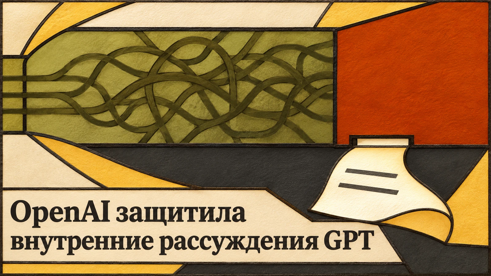

Модели и исследования
Новые языковые модели, архитектуры, бенчмарки и исследования.
28 ноября 2026

Amazon нашла способ избавить ИИ от выдумок в математике
Новости ИИAWS представила инструменты AutoCorrode, позволяющие ИИ-агентам проверять формальные математические доказательства в Isabelle прямо в процессе работы.

В OpenAI готовы променять 40% команды на ИИ
Новости ИИВ гипотетическом опросе исследователей OpenAI медианный ответ составил 40% численности собственной команды ради восстановления доступа к передовым ИИ-агентам.

OpenAI выпустила обновлённого ИИ-юриста, который ошибается в 20 раз реже Claude
Новости ИИОбновлённая Astra for Law 6.2 получила 20,8% полных зачётов в юридическом тесте Harvey LAB-AA и допустила почти в 20 раз меньше существенных галлюцинаций, чем Claude Opus 5.5.

Apple разработала нейросеть, которая генерирует видео почти без задержки
Новости ИИApple и Корнеллский университет представили FastFrames. FastFrames-S выполняет шаг генерации за 36 мс при 480p на одном NVIDIA B200, а в отдельном эксперименте задержку управления камерой сократили до 52 мс. Веса доступны для некоммерческих исследований.

Китайцы обучили огромную нейросеть без NVIDIA и выложили её в открытый доступ
Новости ИИChina Telecom открыла веса Xing4.1-Preview на 285 млрд параметров под Apache 2.0. Модель обучали на 8192 Huawei Ascend 910C; контекст составляет миллион токенов, оригинальные файлы занимают 573 ГБ.
27 ноября 2026
25 ноября 2026

GPT-7 уже существует? Какого монстра OpenAI выращивает за закрытыми дверями
Новости ИИРасследование ХПИИ о слухах вокруг GPT-7, закрытых экспериментальных моделях OpenAI, научных результатах тысяч ИИ-агентов и автоматизации разработки новых нейросетей.

Голосовой ИИ Haru-4B слушает вас даже во время собственного ответа и работает без облака
Новости ИИЯпонская higurashi открыла Haru-4B, голосовую модель, способную одновременно слушать и говорить. speech.cpp 0.11.0 добавил локальный запуск на Windows, Linux и Mac.
Китайцы открыли ИИ на 1,6 триллиона параметров. Он работает на чипах Huawei
Новости ИИMeituan открыла веса LongCat-2.5 с 1,6 трлн параметров под MIT. Модель поддерживает программирование, мультимодальные задачи и оптимизированную конфигурацию W4A4 для Huawei Ascend.
24 ноября 2026

23 ноября 2026

В Китае открыли биржу нейросетей. Уже 50 миллионов запросов в день
Новости ИИBaidu представила Token Exchange, площадку для сравнения и покупки доступа к ИИ-моделям. Компания заявляет о 50 млн обращений в день и более 100 предложениях.

Главный учёный OpenAI предложил притормозить гонку ИИ, и Альтман согласился
Новости ИИГлавный учёный OpenAI Якуб Пахоцкий предложил разработчикам согласовать пределы развития ИИ, преодолеваемые после выполнения конкретных требований безопасности. Сэм Альтман поддержал идею.

OpenAI научила GPT молчать о своих «мыслях»
Новости ИИOpenAI представила защиту от атак, выманивающих скрытые рассуждения GPT: в тестах компании успешность извлечения данных из предыдущих запросов снизилась с 54% до 0,2%.
22 ноября 2026

20 ноября 2026

19 ноября 2026

Google выпустила Gemini 4 Neon: обогнала Claude Opus 5.5 и GPT-6.2 Sol в тестах
Новости ИИGoogle представила Gemini 4 Neon для программирования и задач ИИ-агентов. В Artificial Analysis модель набрала 61 балл; Google сравнивает её стоимость выполнения задач с Gemini 4 Carbon.

Microsoft создала ИИ для поиска уязвимостей: в тесте он обошёл GPT-6 Astra при затратах в 50 раз ниже
Новости ИИMicrosoft представила MAI Cyber 2 Flash для поиска уязвимостей. В тесте CyberGym-E2E модель достигла 92,3% успешных заданий против 91,5% у GPT-6 Astra при затратах менее 2% стоимости конкурента.

Microsoft заявила, что её ИИ-программист почти сравнялся с Claude Opus при затратах в 20 раз ниже
Новости ИИMicrosoft представила MAI Code 2 и MAI Code 2 Flash для программирования в GitHub Copilot. По четырём тестам компании MAI Code 2 достигла 96% результата Claude Opus 5.5 при 5% затрат с учётом временной скидки.
18 ноября 2026

Google открыла Gemini 4 Carbon платным пользователям и показала «рой» ИИ-агентов
Новости ИИGoogle расширила доступ к Gemini 4 Carbon: платный API, корпоративные клиенты и подписчики AI Ultra. Показала экспериментальный /swarm, объявила цены до и после 30 ноября.

Китайские нейросети учатся на ответах OpenAI
Новости ИИReuters изучило свыше 300 документов о том, как китайские исследователи используют ответы американских нейросетей для дообучения собственных моделей. Один эксперимент дал 10 750 двуязычных примеров для Qwen.